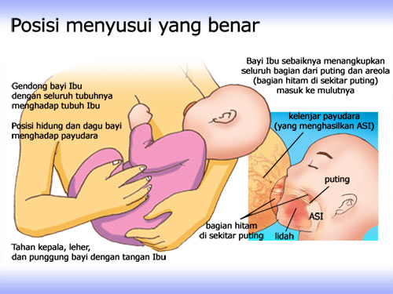
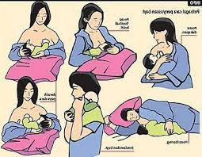

Cara menyusui bayi


- Susui bayi sesering mungkin, semau bayi, paling sedikit 8x sehari
- Bila bayi tidur lebih dari 3 jam, bangunkan lalu susui
- Susui sampai payudara terasa kosong, lalu pindah ke payudara sisi yang lain. (susui payudara kanan kiri bergantian)
- Bila bayi sudah kenyang, tapi payudara masih terasa penuh/kencang, perlu dikosongkan dengan diperah untuk disimpan. Hal ini agar payudara tetap memproduksi ASI yang cukup.
-
Posisi dan pelekatan menyusui yang benar:
- Pastikan posisi ibu ada dalam posisi yang nyaman
- Kepala dan badan bayi berada dalam garis lurus
- Wajah bayi menghadap payudara, hidung berhadapan dengan putting
- Ibu harus memeluk badan bayi dekat dengan badannya.
- Jika bayi baru lahir, ibu harus menyangga seluruh badan bayi
- Sebagian besar aerola (bagian hitam disekitar putting) masuk ke dalam mulut bayi
- Mulut terbuka lebar
- Bibir bawah melengkung keluar
- Dagu menyentuh payudara ibu
- Jangan lupa sendawakan bayi setelah menyusui dengan cara menpuk nepuk punggung bayi.